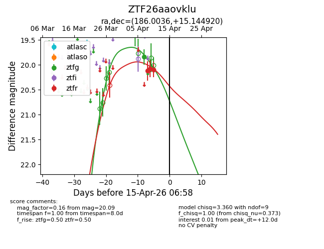
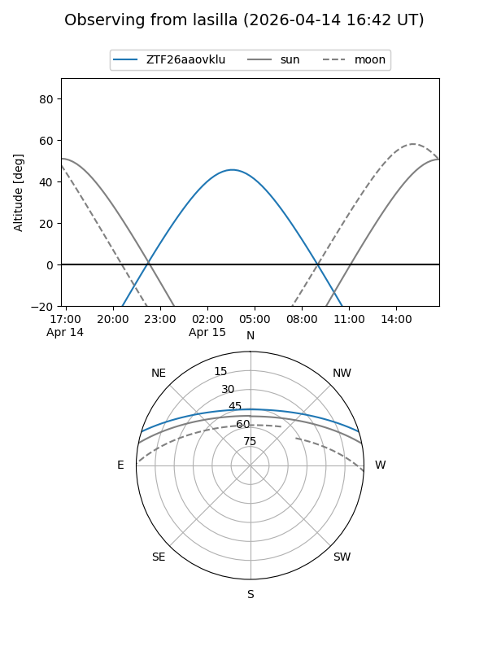
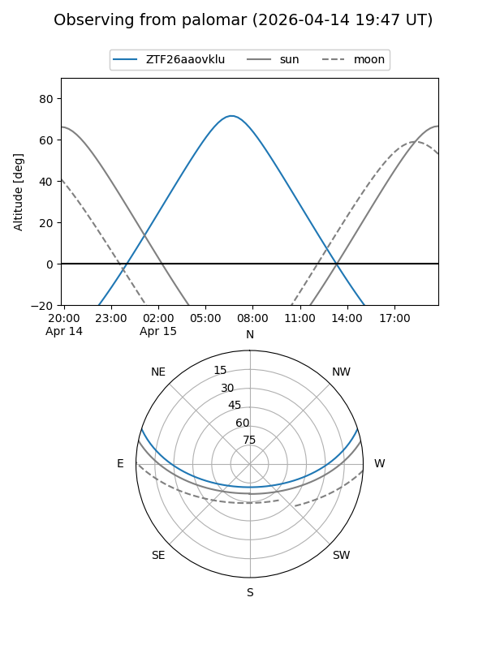
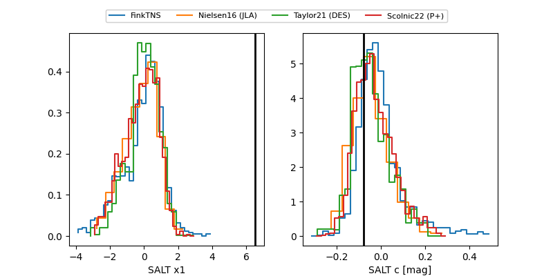

ZTF26aaovklu
Target ZTF26aaovklu at 2026-04-15 07:06
Aliases and brokers:
FINK: link
Lasair: link
ALeRCE: link
alt names
ZTF26aaovklu (ztf,fink_ztf)
Coordinates:
equatorial (ra, dec) = 186.0036,+15.14492
equatorial (HMS+DMS) = 12:24:00.87,+15:08:41.71
galactic (l, b) = (273.5304,+76.42545)
Flags:
Photometry:
last ztfg=19.84, ztfr=20.09
1 ztfg, 3 ztfr detections
Lightcurve

Visibility


Additional plots
